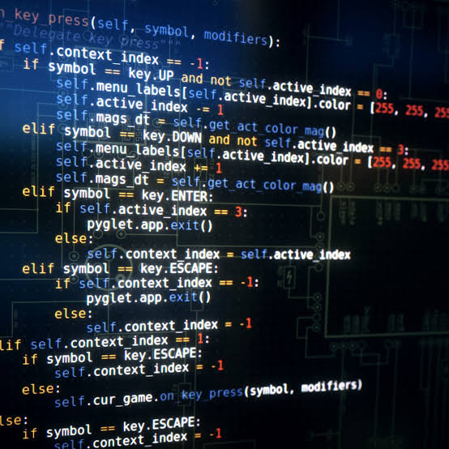

Inside the World of Programming
Learning to Code
Learning to program is a process that requires patience, creativity, and practice. Every programmer starts somewhere, and mistakes are a normal part of learning. When code does not work as expected, debugging helps developers understand problems and find solutions. Each challenge provides an opportunity to improve problem-solving skills and develop confidence.
HTML and CSS are important tools for anyone interested in building websites. HTML organizes information into headings, paragraphs, images, and links, while CSS controls colors, spacing, fonts, and page layouts. Together, these technologies help developers create websites that are attractive, accessible, and easy to navigate on different devices.
Programming also creates opportunities to build interactive projects and video games. Languages such as Python can be used to practice functions, loops, and logical thinking. By completing small projects and learning from feedback, students can gradually develop the skills needed to work on larger and more challenging applications.
Skills Every New Developer Can Practice
Improving as a programmer takes time. These are some useful habits that can help developers build their knowledge and create better projects.
- Practice writing and organizing code.
- Learn how to find and fix programming errors.
- Build websites using HTML and CSS.
- Experiment with Python and game development.
- Keep projects organized and explain how they work.

Looking Toward the Future
Technology continues to change the way people learn, communicate, work, and solve problems. Web development and software programming allow people to turn ideas into useful digital experiences. Understanding the basics can provide a strong foundation for exploring more advanced tools and technologies.
My goal is to continue improving my programming skills by creating websites, experimenting with game design, and completing coding projects. Each project gives me a chance to apply what I have learned and discover something new. I hope to use these experiences to prepare for future opportunities in software development.